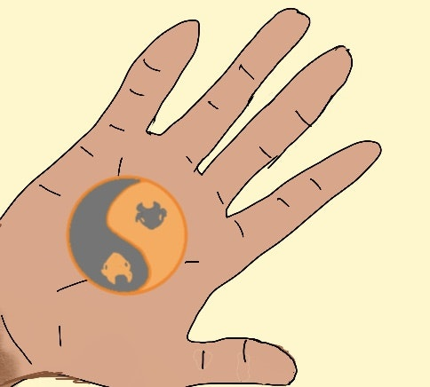

Endgame
In the end, it didn’t exactly end, but then again, it sort of did. It is all so recent, and so strange, I don’t know quite what to make of it all. But let me lay out the bare facts for you.
After the shocking events in September last year, which left six people dead, things went crazy for a while, and I was in the thick of it, and then it all went quiet.

Through October and September, I was repeatedly dragged down to the local FBI field office, where I was interrogated by my old friends at the G-Crimes division, Agents Jane Jopp and Guy Lestrode. Suddenly I was seeing a decidedly unfriendly side of them. I was on the wrong side of what was now known as the Potsdam multiple homicide case.
Thanks to the packages addressed to Gao, Anscombe, and myself found at the crime scene, we had all turned into Persons of Interest at the very least. I think, for a while, I was the Prime Suspect. Gao and Anscombe told me they’d been interrogated only once. But me? I was interrogated four times.
Jopp and Lestrode grilled me relentlessly about The Club. They grilled me about work I’d done with Khan. They grilled me about the Ancient One[1]. They grilled me about the Potsdam group. I told them truthfully that I knew nothing more about anything than I’d told them on the very first day.
But they didn’t ask about was the monk. Or the yak coins, real or fake. Or the strange yin-yang yak-head coins found in the clenched fists of the six corpses.
As for Agent Q, he seemed to disappear entirely.
The final time I was interrogated, in early January (around the time of that shitshow at the Capitol around the Biden inauguration), Jopp and Lestrode seemed tired and resigned. They’d clearly run out of leads.
I figured I was probably no longer a suspect, and decided to venture some questions of my own.
“What happened to those packages Khan left for us? Are we ever going to get them? What was in them?”
“Just some old manuscripts. Agent Q took them so you’ll have to ask him. He said they were about that Yak bullshit you all seem obsessed with. Or Yakshit I suppose”
“Where is Agent Q? Is he no longer on this case?”
Jopp shook her head impatiently, “We don’t report to him, he doesn’t report to us. He’s off somewhere chasing down after those counterfeit coins and that monk character. He has some sort of fixation there. Like Javert in Les Miserables. No, the counterfeit coins thing is a red herring. Some sort of international art and antiques counterfeiting ring I suppose. Not motive for six homicides.”
“So what’s this about then?”
“What do you think? It’s all about the Potsdam group and that Club you and your buddies were working for. Something big was going down at that dinner party. Something someone powerful wanted stopped.”
“We weren’t working for them,” I protested. “Like I keep saying, Khan just told us they’d be making things happen for us. We didn’t even know who they were. I swear.”
Jopp waved the protest away irritably.
“Maybe I believe you. It really doesn’t matter. Whatever this was about, it was bigger than the sort of two-bit hustling you get up to, no offense.”
That stung, but I let it go. Big picture, two-bit hustler or not, I was at least no longer a Person of Interest.
Lestrode said, “So you’re sure there’s nothing more you can tell us?
“I’ve told you everything,” I said.
And that was the last I heard from any of them until last week.
In the months following the murders, Gao, Anscombe, and I got into the habit of meeting up at the park every couple of weeks, to catch up.
We’d sit on the grass, six feet apart, and talk about gigs, geopolitics, the China trade war, the Presidential transition, NFTs, machine learning (which Anscombe was getting deep into), and of course Covid and vaccines.
But one thing we didn’t talk about was the case.
Occasionally, we’d spot an unmarked white van parked across the street from our usual spot in the park. The driver would occasionally glance at us. We were being watched, and G-crimes wanted us to know it.
It was at the most recent of these meetings though, last week, that things finally came to a resolution of sorts. Or didn’t. You’ll have to decide.
On the morning in question, the three of us met up as usual. There was no van watching us that day. There hadn’t been one several weeks. Perhaps they’d stopped watching us?
I was tired and irritable, having slept poorly, with weird dreams, for several days. Strangely enough, Gao and Anscombe looked red-eyed and tired too.
“Looks like we all slept badly, huh?” I said, loosening my mask a little and settling down on the grass in our usual spot in the park, slightly off the main path.
Anscombe said, “The last few nights actually. I keep having these weird dreams. There’s some sort of dark forest, and then it turns into a stormy ocean, and there’s this Cthulhu-like thing with tentacles….”
“…thrashing around, and then it turns into Tibet and there’s a bunch of yaks grazing all around,” Gao finished.
We all looked at each other, startled.
“We’ve all been having the same recurring weird dream?” I said.
Anscombe said, “Coincidence. Probably just Lovecraftian energy on TV. Big mood.”
“Who is Lovecraft?” asked Gao.
Before either of us could respond, a new voice interrupted.
“Thought we’d find you guys here.”
I turned around to look. Jopp and Lestrode were walking up the path, towards us. They’d parked where the surveillance van usually did. We hadn’t noticed them pull up.
I almost didn’t recognize them at first — they were in casual clothes rather than their usual suits. They’d traded their trademark black briefcases for a handbag and a backpack respectively.
“Agent Jopp! Agent Lestrode! Long time no see!” said Gao.
“Just plain Jane Jopp and Guy Lestrode now. We’re no longer with the FBI.”
“What! What happened?” I asked.
Jopp shrugged, settling down on the grass. “They shut down the G-crimes division. The new administration seems to want to legislate the gig economy out of existence, not police it.”
Lestrode settled down next to her, and said, “The white collar crimes guys took over all our cases. Most of our division got reassigned there as well.”
“But you two didn’t?”
“We quit.”
“G-crimes was our little indie outfit within the FBI. We got to play by our own rules. We were free agents really. Just a couple of dozen of us. Good times.”
“I guess neither of us wanted to get absorbed back into the big mainstream FBI bureaucracy.”
“So you are…”
“Actual free agents now, yes. Same as you guys,” said Jopp.
“Got any leads for gigs? Not kidding. I’m getting a PI license. Looking to get into corporate security,” said Lestrode.
“What happened to the Potsdam case? Are we finally cleared? Or are we going to get hauled down to the field office by the new guys now?”
“They might drop by for a quick chat, but we basically cleared you three before we handed over the case. You’re welcome.”
“And the case?”
It’s effectively a cold case now. Not even a cause of death to work with. It wasn’t the wine. At least nothing we could detect. Apparently they all had heart attacks at the same time. Probably one of those undetectable new synthetic poisons.”
“What about the other leads?”
“They mostly went nowhere. We did crack that list of code names and encrypted strings though. Not that it was much use.”
“You did?”
“Khan had the decryption key on his phone. Part of each string was a city name. Thirty four major cities, each appearing between one and four times on the list. Eighty entries in all. The rest was numbers. We couldn’t figure out what they were.”
“Which cities?”
“All over the world. A couple each from Hong Kong, Singapore, Seoul, Mumbai. Four from London. One each from Rio, Moscow, Rome, Dubai…”
“But no luck with the code names? All that Zeus, Prometheus stuff?”
“Aliases we think. The list was almost certainly the Club, the one Khan mentioned to you. The group behind him and his buddies. Except we think they were actually part of it, not merely representing it. Some sort of power broker network. Agent Q’s agency had identified about a dozen of them from other leads, but we only had aliases for the rest.”
“What is this agency Agent Q worked for? You never did tell me, and neither did he.”
Jopp shrugged. “He never told us either. He had all the right clearances, and we had orders coming down from on high to cooperate with him.”
“So what was this power-broker network? This Club? Or at least the ones you could identify?”
“Big Three consultants, old economy bagmen, failsons, Davos types, influence peddlers for dictators, academics on the take. The usual crowd. Why they thought you three small-timers were worth bothering with, I don’t know.”
“What about the victims? Were they part of the Club?” Gao asked.
“The six victims were from the six American and Canadian cities on the list, so yeah. Can’t be a coincidence. We think North America was the core of the network, and this Potsdam group was the ring leaders. Some sort of internal coup perhaps. Maybe that monk character Q was chasing was the assassin. Maybe the Asian faction was trying to take over the Club from the North American faction. Or maybe it was just a cult suicide. Not my case anymore, so I don’t really care.”
“What about the Yak angle. The coins. Those manuscripts Khan left for us?”
“Oh yeah, Q mailed them back to us a couple of weeks ago, just before we quit. There was a note to hand them over to you guys. That’s why we’re here actually,” said Lestrode.
He reached into his backpack, pulled out the three packages, and handed them to us. They’d been opened and resealed.
“I still think that whole angle was a red herring. This gang was into toppling governments and corporate takeovers. Maybe even assassinations. Counterfeiting antique coins doesn’t seem to fit,” said Jopp.
I opened mine and took a quick look. It was, as Jopp had said, an old manuscript, in Tibetan. An inch thick, with the head of a yak embossed on the red cover. Gao and Anscombe were looking at their packages too. Their manuscripts seemed identical, except that their covers seemed to be green and yellow respectively.
Lestrode sniggered, “If this were a comic book, you three would be Keepers of the Books. Keeper of the Red Book, Keeper of the Green Book, Keeper of the Yellow Book. I’d just try to sell them on eBay if I were you. Probably worth a bit to collectors.”
Jopp said, “The package was shipped from Bhutan. So I guess Q is still down there chasing his monk. Well, it’s his wild goose to chase.”
“Or his wild yak to shave,” I said.
A new voice spoke. A voice I’d last heard a decade ago, in Bhutan.
“Very clever, Mr. Rao. How’s that working out for you?”
The monk did not appear to have come down the path. He looked like he’d just stepped out from behind the clump of trees next to the patch of grass we were sitting on. Or at least he must have. None of us saw him approach.
I am referring to him as the monk, because he’d been dressed like one when I’d first met him in Bhutan in 2011, and because that’s what Agent Q had called him. But this time, he was in jeans and a hoodie. He didn’t appear to have aged at all. Still old, but no older.
An ageless old monk in youthful jeans and a hoodie. Yet, somehow, the effect was not incongruous.
He walked up and joined our circle, arranging himself neatly cross-legged and straight-backed, hands resting lightly in his lap. Perhaps he was a monk after all.
Jopp, Lestrode, and Anscombe were staring open-jawed.
Gao, like me, looked both surprised and surprised. I’d always suspected he too, like me, had had a previous encounter with the monk and his magic tricks.
“Where did you come from?” I asked.
“From over there,” he gestured vaguely at the woods behind us. “I was out for a walk and spotted your little group here and decided to join you. Lovely spring day, isn’t it? I see you’ve gained some weight and grey in your hair since we last met, Mr. Rao. You should really try butter tea.”
He turned to Gao, “And nice to see you again as well, Mr. Gao.”
There was silence for a moment. Nobody seemed to have anything to say.
Finally, Jopp found her voice. And apparently, her investigative instincts as well. She reached for her phone.
“I think, Sir, if you are who I think you are, you have a few questions to answer. And I think I’d better make a few calls.”
“I thought you were no longer with the FBI, Ms. Jopp? Perhaps you will indulge me for just a few moments. But by all means, make your calls if you must.”
Jopp hesitated, then put her phone down, and glanced at Lestrode. Then back at the monk.
“How about you start with your name, and we’ll go from there.”
The monk, waved her question away.
“My name does not matter.” He turned towards me, Gao and Anscombe. “I see the three of you finally have the packages I left for you. Q is a man of his word. He will do well as my successor.”
“Well at what? What do you mean your successor. Are you with the same agency?” Jopp asked.
“You left the packages for us? Not Khan?” I asked, at the same time.
The monk turned to Jopp first.
“I’m afraid Q misled you. Like all of us here, he is a free agent. Just one with a very particular set of skills. He is exceptionally skilled at appearing to be the agent of larger organizations.”
“So he found you?”
“It would be more accurate to say I allowed myself to be found. It was time, and he was finally ready.”
“What do you mean? And how is he your successor?”
“My dear Ms. Jopp! I mean merely that your former associate is merely covering for me in… one of my long-term Bhutanese gigs, shall we say? For a few yak coins.”
“So this is about the Order of the Yak? That’s a real thing then?”
“Of course not! The Order of the Yak has not existed for a thousand years. The coins are merely a sentimental memory now. Some of us merely play games with them out of nostalgia. Unless you are referring to the little online community Mr. Rao here has helped instigate.1[2] I am not part of that charming little experiment I am afraid. I do wish it well though. Great transformations must rest on little experiments after all.”
He turned to me.
“To answer your question, Mr. Khan and his dinner guests had other plans for the manuscripts, but they all saw the wisdom in my suggestion that the manuscripts should pass into more appropriate hands.”
Lestrode pounced, “Ah, so you were there the night of the murders. We have you on the front door security camera, but now by your own admission, you were inside too.”
“Of course I was. Where else would I be? It was time.”
“So you admit it! You killed them!” Lestrode was on his feet now, reaching for his phone.
“Me? No. I was merely present as a witness when they recognized the folly of the path they were on, and did what had to be done.”
“Folly? What folly?”
“It is always the same folly isn’t it? Whenever great transformations are underway, there are those who believe they need not change, even if others must.”
“What great transformation?” Jopp asked suspiciously.
“Come now, Ms. Jopp. You too have been a free agent now for several weeks, as has your former colleague Mr. Lestrode. Surely you read about it in the news? Feel it in your bones? See it in your dreams and nightmares? The world is changing. Changing deeply. A New Normal is indeed on its way.”
As he spoke, he turned to Gao, Anscombe, and me in turn, looking steadily and kindly into each of our eyes in turn.
“Don’t worry. The dreams will fade in a few weeks.”
Then he turned back towards Jopp and Lestrode.
“You will begin to feel it soon enough. You have the attunement. You are true indies. I am confident I have chosen well.”
“Chosen?”
The monk smiled, “I’m afraid it is time.”
“Time for what?” I asked.
“Time for me to go. You will not see me again, but I expect you will see your friend Q now and again.”
And with that, he began to fade slowly (and I have to say, somewhat theatrically), dissolving into a gentle flurry of orange leaves, his smile fading last of all.
We all stared stupidly at the pile of leaves that remained where he’d been a few seconds ago. It looked strange on the ground there, an anachronistic patch of fall in early springtime.
I realized I was clenching my fist. There was something in it. I opened it.
It was a coin.
A coin that looked exactly like the strange yak-head yin-yang yak coins that the victims in the Potsdam case had been clutching.
I looked around. The others were unclenching their fists and staring at coins too. And somehow, I knew that they were in fact the same coins.
We all looked at each other.
“Weren’t there six coins? There’s five of us here,” Lestrode said.
“Maybe Q has the sixth one?” Anscombe said.
“I don’t think so,” said Gao thoughtfully. “The monk said Q was his successor. We are five are the Chosen Ones. That seems… different.”
“Whatever that means,” said Jopp.
“I think, I might know who…” I began.
My phone dinged. It was a message from my brother, Mycroft Rao.
Do you know anything about this?
A picture followed. A picture of the sixth yin-yang yak-head coin in Mycroft’s palm.
“I think,” I said, looking up, “we have a dinner for six to plan, once we’re all vaccinated.”
- Ancient One — always_be_strategizing.html
- 1 — index.html